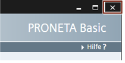

PRONETA Professional ist ein kommerzielles, lizenziertes Software-Produkt, das von SIEMENS vertrieben wird. Es umfasst den Funktionsumfang von PRONETA Basic und stellt darüberhinaus zusätzliche Funktionalitäten zur Verfügung.
Bezug von PRONETA Basic
PRONETA Basic ist als kostenloser Download im SIEMENS Support-Portal erhältlich:
https://support.industry.siemens.com/cs/ww/de/view/67460624
Dieses Handbuch bezieht sich auf Version 3.0.
Systemvoraussetzungen
Die Verbindung mit PROFINET wird über ein Industrial Ethernet-Kabel hergestellt.
Folgende zusätzliche Software-Komponenten müssen ebenfalls vorhanden sein:
WinPcap 4.1.3 oder höher
Falls .NET auf Ihrem PC fehlt, wird Sie der Installer zu einer Download-Adresse führen. WinPcap ist Teil der PRONETA Basic-Distribution und wird beim ersten Start von PRONETA Basic installiert, falls es nicht gefunden wird.
|
HINWEIS |
|
Unterstützte SIMATIC-Software
Mit PRONETA Basic können Sie Referenzprojekte laden, die mit STEP 7, Versionen 5.4, 5.5 oder 5.6 erstellt wurden. Es können ferner AML-Dateien („Automation Markup Language“) importiert werden, die mit TIA Portal erstellt wurden.
Einschränkungen
Die maximale Größe eines Netzwerks, bei der Netzwerkscans verlässlich durchgeführt werden, beträgt 500 Geräte. Bei größeren Netzwerken kann es sein, dass Geräte unentdeckt bleiben oder PRONETA Basic abstürzt. (Siehe auch Online-Modus)
Beim IO-Test werden Signaländerungen mit einer Dauer von weniger als 256 ms möglicherweise nicht zuverlässig entdeckt. (Siehe auch I/O Testmodus)
PRONETA Basic unterstützt alle PROFINET-konformen Geräte unabhängig von deren Hersteller. Der unterstützte Funktionsumfang ist abhängig von den einzelnen Geräten.
Der IO-Test unterstützt die folgenden Module:
Die meisten aktuellen SIMATIC ET 200-Module
SIMATIC IO-Link Module (Master/Device)
SIMATIC Compact Field Units (CFU)
SIRIUS Motor Starter mit Firmware-Versionen ab 1.1
Heizungssteuerung SIPLUS HCS4200/4300
Referenzliste
Eine laufend aktualisierte Liste der unterstützten Module für PRONETA Basic finden Sie auf der PRONETA Basic Download-Seite
Aktualisierung der PRONETA Basic GSDML-Datenbank
Module, die nach der Freigabe der Version 2.6 erschienen sind, können durch einen Import der GSDML-Datei von den Webseiten des SIEMENS Industry Online Support-Portals nachträglich unterstützt werden, sofern sie keine neuen Funktionen benötigen. Nähere Informationen hierzu erhalten Sie im Kapitel GSDML-Manager.
Installation
Extrahieren Sie das PRONETA Basic-Dateiarchiv in einen Ordner Ihres PCs, und verbinden Sie Ihren PC über ein Industrial Ethernet-Kabel mit Ihrer Anlage.
Es ist keine weitere Installation für PRONETA Basic notwendig.
|
HINWEIS |
Der Pfad zum Extrahieren von PRONETA Basic darf keines der Sonderzeichen „#“ oder „;“ enthalten. Für die Durchführung von IO-Tests (siehe I/O Testmodus) muss PRONETA in einem Verzeichnis installiert werden, in dem es bei der Ausführung Schreibrechte hat. |
PRONETA Basic starten
Nach der Installation können Sie PRONETA Basic durch einen einfachen Doppelklick auf das Programmsymbol im Extraktionsordner starten.
|
HINWEIS |
Beim ersten Ausführen von PRONETA Basic werden Sie aufgefordert, die Lizenzbedingungen zu akzeptieren, bevor Sie fortfahren können. |
Sie können auch eine Verknüpfung zu PRONETA Basic auf Ihrem Desktop erstellen und das Programm von dort aus starten.
PRONETA Basic beenden
Um PRONETA Basic zu beenden, klicken Sie auf das „Schließen“-Symbol im Programmfenster.

Deinstallation
Wenn Sie PRONETA Basic nicht weiter verwenden möchten, führen Sie die beiden folgenden Schritte aus:
1. Löschen Sie den Ordner, in den Sie PRONETA Basic extrahiert haben.
2. Führen Sie im Windows-Startmenü „WinPcap -> WinPcap 4.1.3 deinstallieren“ aus.